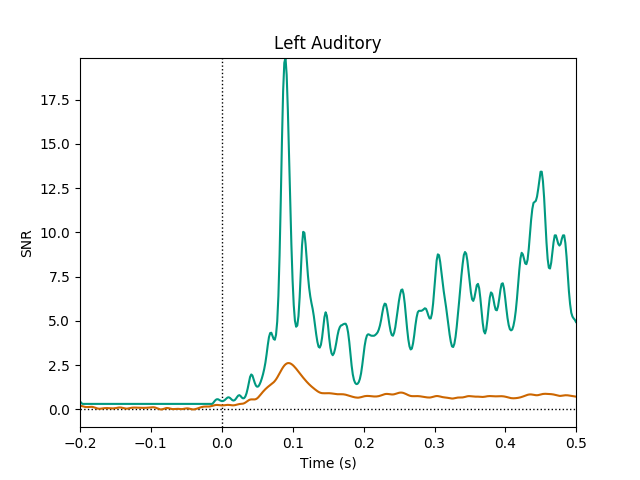

Note
Click here to download the full example code
This estimates the SNR as a function of time for a set of data.
Out:
Reading inverse operator decomposition from /home/circleci/mne_data/MNE-sample-data/MEG/sample/sample_audvis-meg-oct-6-meg-inv.fif...
Reading inverse operator info...
[done]
Reading inverse operator decomposition...
[done]
305 x 305 full covariance (kind = 1) found.
Read a total of 4 projection items:
PCA-v1 (1 x 102) active
PCA-v2 (1 x 102) active
PCA-v3 (1 x 102) active
Average EEG reference (1 x 60) active
Noise covariance matrix read.
22494 x 22494 diagonal covariance (kind = 2) found.
Source covariance matrix read.
22494 x 22494 diagonal covariance (kind = 6) found.
Orientation priors read.
22494 x 22494 diagonal covariance (kind = 5) found.
Depth priors read.
Did not find the desired covariance matrix (kind = 3)
Reading a source space...
Computing patch statistics...
Patch information added...
Distance information added...
[done]
Reading a source space...
Computing patch statistics...
Patch information added...
Distance information added...
[done]
2 source spaces read
Read a total of 4 projection items:
PCA-v1 (1 x 102) active
PCA-v2 (1 x 102) active
PCA-v3 (1 x 102) active
Average EEG reference (1 x 60) active
Source spaces transformed to the inverse solution coordinate frame
Reading /home/circleci/mne_data/MNE-sample-data/MEG/sample/sample_audvis-ave.fif ...
Read a total of 4 projection items:
PCA-v1 (1 x 102) active
PCA-v2 (1 x 102) active
PCA-v3 (1 x 102) active
Average EEG reference (1 x 60) active
Found the data of interest:
t = -199.80 ... 499.49 ms (Left Auditory)
0 CTF compensation matrices available
nave = 55 - aspect type = 100
Projections have already been applied. Setting proj attribute to True.
Applying baseline correction (mode: mean)
Read a total of 4 projection items:
PCA-v1 (1 x 102) active
PCA-v2 (1 x 102) active
PCA-v3 (1 x 102) active
Average EEG reference (1 x 60) active
Found the data of interest:
t = -199.80 ... 499.49 ms (Right Auditory)
0 CTF compensation matrices available
nave = 61 - aspect type = 100
Projections have already been applied. Setting proj attribute to True.
Applying baseline correction (mode: mean)
Read a total of 4 projection items:
PCA-v1 (1 x 102) active
PCA-v2 (1 x 102) active
PCA-v3 (1 x 102) active
Average EEG reference (1 x 60) active
Found the data of interest:
t = -199.80 ... 499.49 ms (Left visual)
0 CTF compensation matrices available
nave = 67 - aspect type = 100
Projections have already been applied. Setting proj attribute to True.
Applying baseline correction (mode: mean)
Read a total of 4 projection items:
PCA-v1 (1 x 102) active
PCA-v2 (1 x 102) active
PCA-v3 (1 x 102) active
Average EEG reference (1 x 60) active
Found the data of interest:
t = -199.80 ... 499.49 ms (Right visual)
0 CTF compensation matrices available
nave = 58 - aspect type = 100
Projections have already been applied. Setting proj attribute to True.
Applying baseline correction (mode: mean)
Preparing the inverse operator for use...
Scaled noise and source covariance from nave = 1 to nave = 55
Created the regularized inverter
Created an SSP operator (subspace dimension = 3)
Created the whitener using a noise covariance matrix with rank 302 (3 small eigenvalues omitted)
Picked 305 channels from the data
Effective nchan = 305 - 3 = 302
# Author: Eric Larson <larson.eric.d@gmail.com>
#
# License: BSD (3-clause)
from os import path as op
from mne.datasets.sample import data_path
from mne.minimum_norm import read_inverse_operator
from mne import read_evokeds
from mne.viz import plot_snr_estimate
print(__doc__)
data_dir = op.join(data_path(), 'MEG', 'sample')
fname_inv = op.join(data_dir, 'sample_audvis-meg-oct-6-meg-inv.fif')
fname_evoked = op.join(data_dir, 'sample_audvis-ave.fif')
inv = read_inverse_operator(fname_inv)
evoked = read_evokeds(fname_evoked, baseline=(None, 0))[0]
plot_snr_estimate(evoked, inv)
Total running time of the script: ( 0 minutes 2.822 seconds)
Estimated memory usage: 10 MB